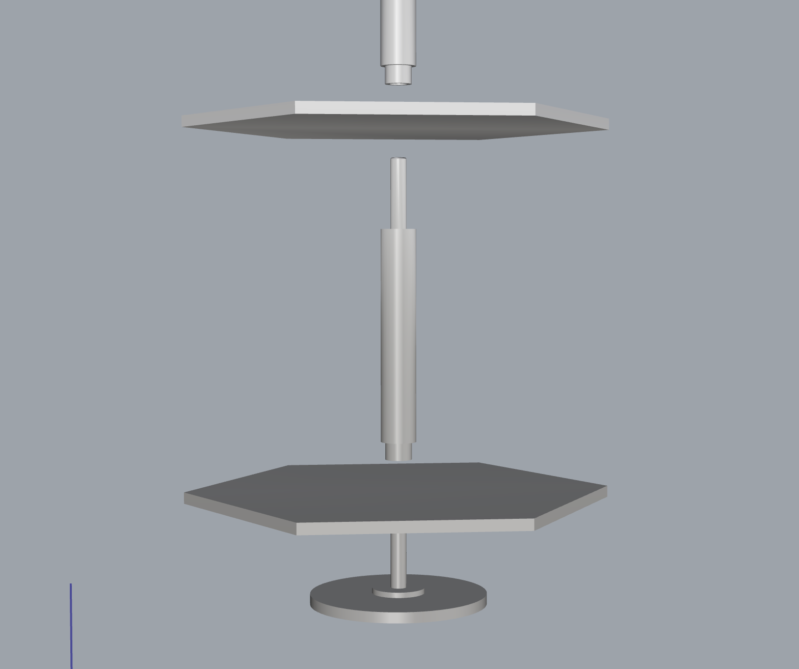
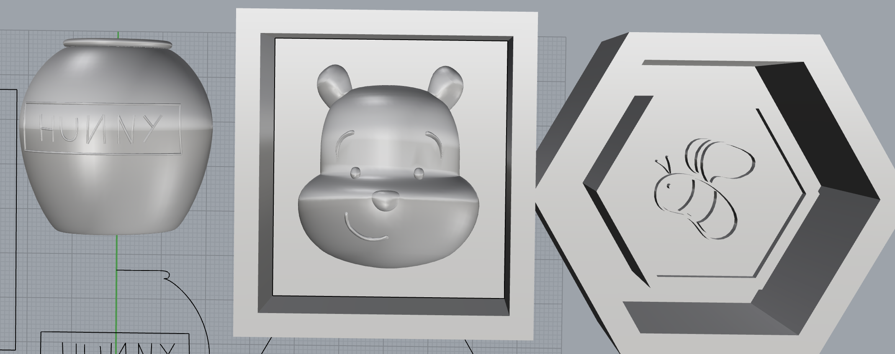

The goal of my final project is to make a tiered tea tray with some chocolates. I want my tiers to swivel so I looked up some inspiration on thingiverse and came across this rotating organizer. I plan to copy the connecting mechanism to achieve the same spin.
 Here are my rough plans drawn up in Rhino.
Tasks
Bill of Materials
Contingency plans
I am worried that 3D printing will fail for me and if that happens I will try to mill using the wax for my chocolates.
I'm also worried about acrylic because I've never used it before.
If acrylic doesn't work out for me I will most likely use cardboard.
Time is another constraint.
I scheduled everything to be done by Monday but realistically may need Tuesday to complete everything.